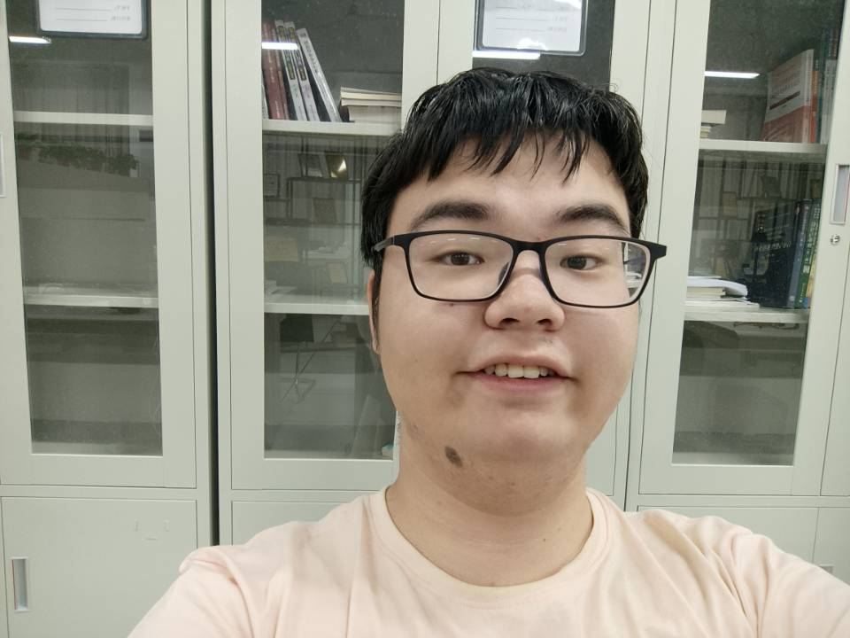

Undergraduate
School of Computer Science and Technology, Anhui University
111 Jiulong Road, Hefei, China 23060
2021-2025, undergraduate, Anhui Engineering Laboratory of IoT Security Technologies, School of Computer Science and Technology, Anhui University
sanghaoxiang[at]gmail[dot]com
E42114027[at]stu[dot]ahu[dot]edu[dot]cn
Adivisor : Cui Jie, Zhang Jing
overall 4.23 / 5
ranking 1 out of 82 in our speciality (Information Security)
ranking 5 out of 441 in our school (Computer Science)
| 学年 | 学期 | 课程代码 | 课程名称 | 课程性质 | 学分 | 绩点 | 成绩 | 学院名称 | 课程英文名称 |
|---|---|---|---|---|---|---|---|---|---|
| 2021-2022 | 1 | GG17002 | 大学生心理健康教育 | 公共基础课 | 1 | 2.5 | 中等 | 学生处（党委学生工作部） | Mental Health Education for College Students |
| 2021-2022 | 1 | GG62051 | 大学英语（A）I | 公共基础课 | 4 | 3.6 | 86 | 大学外语教学中心 | College English（A）I |
| 2021-2022 | 1 | GG31016 | 高等数学A（一） | 公共基础课 | 6 | 4.2 | 92 | 数学科学学院 | Advanced Mathematics A (i) |
| 2021-2022 | 1 | ZJ36016 | 高级语言程序设计 | 专业核心课 | 3 | 5 | 100 | 计算机科学与技术学院 | High-level Programming Language |
| 2021-2022 | 1 | ZJ36017 | 高级语言程序设计实验 | 专业核心课 | 1 | 5 | 100 | 计算机科学与技术学院 | Experiments of High-level Programming Language |
| 2021-2022 | 1 | ZJ36005 | 计算机导论 | 专业核心课 | 1 | 4.1 | 91 | 计算机科学与技术学院 | Introduction to Computer Science |
| 2021-2022 | 1 | TY64117 | 啦啦操初级班 | 公共基础课 | 0.5 | 3.5 | 良好 | 体育军事教学部 | Cheer Leading Basic |
| 2021-2022 | 1 | GG61014 | 思想道德与法治 | 公共基础课 | 3 | 4 | 90 | 马克思主义学院 | Ideology, Morality and the Rule of Law |
| 2021-2022 | 1 | TX04093 | 习近平法治思想概论 | 通识教育选修课 | 2 | 4.1 | 91 | 法学院 | Xi Jinping thought on rule of law |
| 2021-2022 | 2 | ZX36316 | Python程序设计 | 专业选修课 | 2 | 4.5 | 95 | 计算机科学与技术学院 | Programming in Python |
| 2021-2022 | 2 | ZX36371 | Python程序设计实验 | 专业选修课 | 1 | 4.5 | 优秀 | 计算机科学与技术学院 | Experiments of Programming in Python |
| 2021-2022 | 2 | GG61016 | “四史”教育 | 公共基础课 | 1 | 4.3 | 93 | 马克思主义学院 | 4 histories about CCP |
| 2021-2022 | 2 | GG32001 | 大学物理A（上） | 公共基础课 | 4 | 4.7 | 97 | 物理与光电工程学院 | College Physics(I) |
| 2021-2022 | 2 | GG32009 | 大学物理实验A（上） | 公共基础课 | 1 | 3.9 | 89 | 物理与光电工程学院 | Experiment of College Physics(I) |
| 2021-2022 | 2 | GG62052 | 大学英语（A）II | 公共基础课 | 4 | 3.2 | 82 | 大学外语教学中心 | College English （A）II |
| 2021-2022 | 2 | GG31017 | 高等数学A（二） | 公共基础课 | 6 | 4.5 | 95 | 数学科学学院 | Advanced Mathematics A (ii) |
| 2021-2022 | 2 | GG64001 | 军事理论 | 公共基础课 | 2 | 3.5 | 85 | 体育军事教学部 | Military Theory |
| 2021-2022 | 2 | TY64156 | 手球初级班-男 | 公共基础课 | 1 | 3.5 | 良好 | 体育军事教学部 | Men‘s Handball Basic |
| 2021-2022 | 2 | ZJ36007 | 数据结构 | 专业核心课 | 4 | 4.9 | 99 | 计算机科学与技术学院 | Data Structures |
| 2021-2022 | 2 | ZJ36021 | 数据结构实验 | 专业核心课 | 1 | 5.0 | 100 | 计算机科学与技术学院 | Experiments of Data Structures |
| 2021-2022 | 2 | GG17003 | 职业规划与就业创业 | 公共基础课 | 1 | 4.5 | 优秀 | 学生处（党委学生工作部） | Career Planning and Employment and Entrepreneurship |
| 2021-2022 | 2 | GG61112 | 中国近现代史纲要 | 公共基础课 | 3 | 4.5 | 95 | 马克思主义学院 | The Outline of The Modern Chinese History |
| 2021-2022 | 2 | TX03015 | 中文写作 | 通识教育选修课 | 2 | 4.5 | 优秀 | 文学院 | Chinese Writing |
| Competition | Score | Prize | Rank |
|---|---|---|---|
| NOIp 2018 (National Olympiad in Informatics in Provinces) | 297/600 | The First Prize | 3226 out of 12872 |
| CTS 2019 (China Team Selection) | 108/600 | Bronze Awards | 265 out of 489 |
| AHOI 2019 (Anhui Province Team Selection Competition) | / | Fail | Middle-Bottom |
| APIO 2019 (Asia and Pacific Informatics Olympiad) | 108/600 | Honorable Mention | / |
| CSP-S 2019 (Certified Software Professional - Senior) | 285/600 | The First Prize | 1644 out of 13870 |
| AHOI 2020 (Anhui Province Team Selection Competition) | 280/600 | Fail | 24 out of 61 |
| National College Entrance Examination 2021 | 593/750 | / | 16716 out of 235000 |
| The 46th ICPC Asia Jinan Regional Contest (2021) | 1/13 | Honorable Mention | 278 out of 730 |
| The 46th ICPC Asia Nanjing Regional Contest (2021) | 3/13 | Honorable Mention | 430 out of 681 |
| THUPC 2022 (Tsinghua University Program Competition 2022)) | 0 | Peach | / |
| AHUPC 2022 (Anhui University Program Competition 2022) | 460/800 | The first Prize | 6 out of 135 |
| CSP 25th (Certified Software Professional, C/C++) | 400/500 | / | 0.87% |
| Lanqiao Cup 2022 (Software, C/C++ Program) | / | the First Prize in Anhui the Silver Prize in China | 6 in Anhui 220 in China |
| CCCC-GPLT 2022 (Group Programming Ladder Tournament, China Collegiate Computing Contest ) | 1888/3000(Team) 190/300(Me) | Bronze Awards(Team) Bronze Awards(Me) | 49 in 217 (Team) 965 in 14226(Me) |
| Anhui robot Competition - Program track | 790/1100 | The first Prize in Anhui | 5 in Anhui |
| National College Student Olympiad in Mathematics 1st | / | Honorable Mention | Nearly bottom |
| National College Student Algorithm and Program Challenge Match | 8/11 | The first Prize in China | 93/1985 |
| Time | Type | Score |
|---|---|---|
| June, 2022 | CET-4 | 489 |
Since the School of Computer Science and Technology, Anhui University only provide the National scholarship to Fourth-year undergraduates in the fall, I'm sorry that I don't have one.
| Faculties | Course |
|---|---|
| Zhaoxia Yin (殷赵霞) | C Program |
| Xianjun Han (韩先君) | Advance Math (i) |
| Jin Tang (汤进) | Introduce to Computer Science Python (Practice) |
| Erzhou Zhu (朱二周) | Data Structure (Theory) |
| Li Ni (倪莉) | Python (Theory) |
| Jin Zhang (张静) | Data Structure (Practice) |
| Hanpeng Gao (高汉鹏) | Advance Math (ii) |